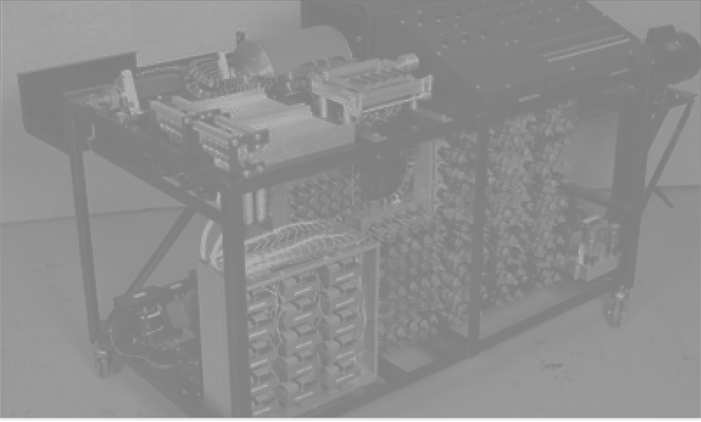
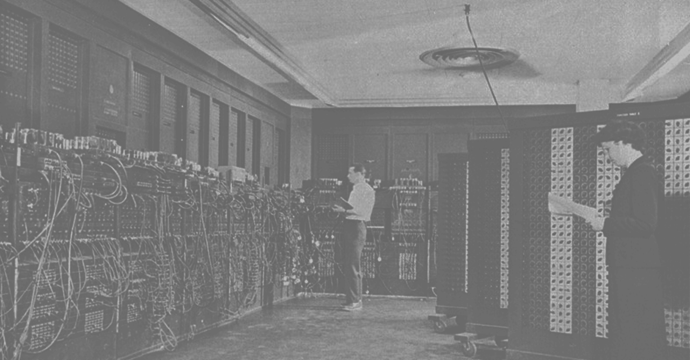

O IBM SSEC foi um computador eletromecânico pioneiro que marcou a transição entre as
calculadoras programáveis e os computadores eletrônicos modernos.

O ENIAC foi o primeiro computador digital eletrônico de uso geral da história.
Criado para realizar cálculos balísticos para o Exército dos EUA durante a
Segunda Guerra Mundial.

O primeiro a abandonar as partes móveis. Conheça o Atanasoff-Berry
Computer, considerado o primeiro computador digital a usar válvulas eletrônicas.